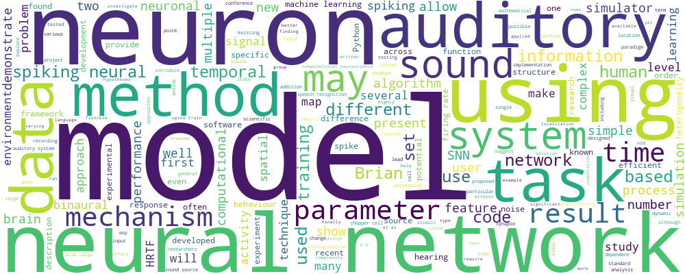

This is an experimental page to visualise the research themes of the lab. Note that some of the visualisations
do not work well in Internet Explorer. Nodes in the graphs below are clickable and will take you to the
list of associated publications.
Word cloud

The word cloud is generated from all of the abstracts of publications
on this site using the wordcloud package for
Python.
Connections
The image above is a clickable SVG file generated by GraphViz using the
neato layout algorithm. For each pair of categories, we count the number of papers that are in both
categories. This is then turned into a distance target for the layout algorithm, so that it tries to place
categories with the lowest number of papers about twice as far away from each other as category pairs with the
highest number of shared categories. Nodes (categories) are coloured according to the number of papers in that
category, and edges according to the number of papers in both categories.
Hierarchy
The clickable SVG is generated in the same way as the one above but using the hierarchical dot
layout algorithm, and this time using a hand-defined graph of relationships between categories. Arrows indicate that
the target category is a subset of the source category.